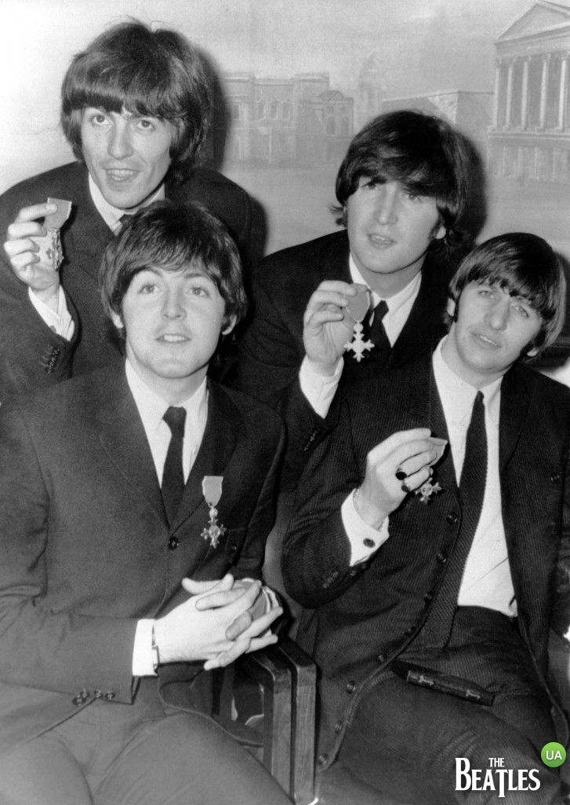
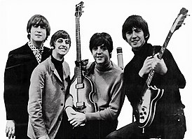
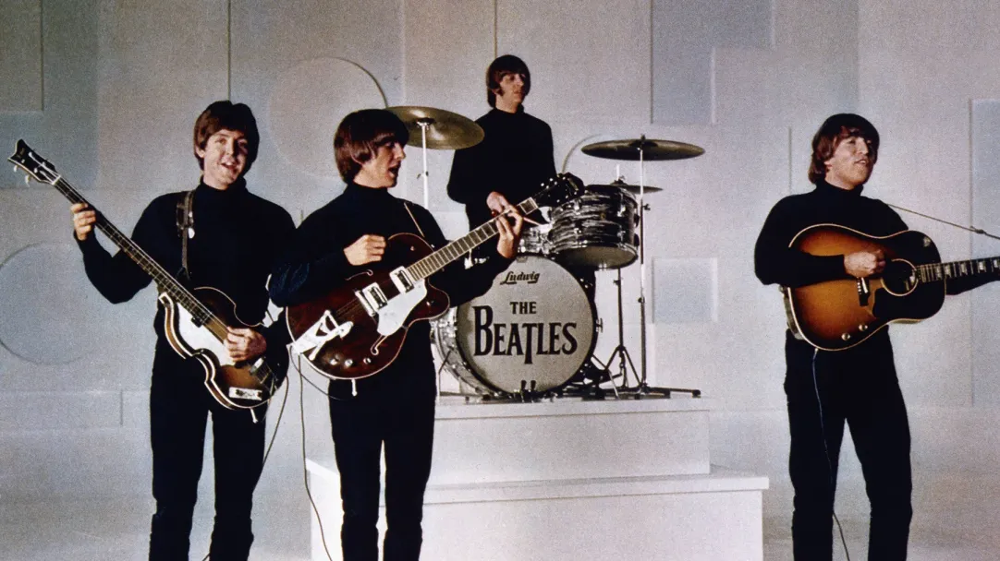
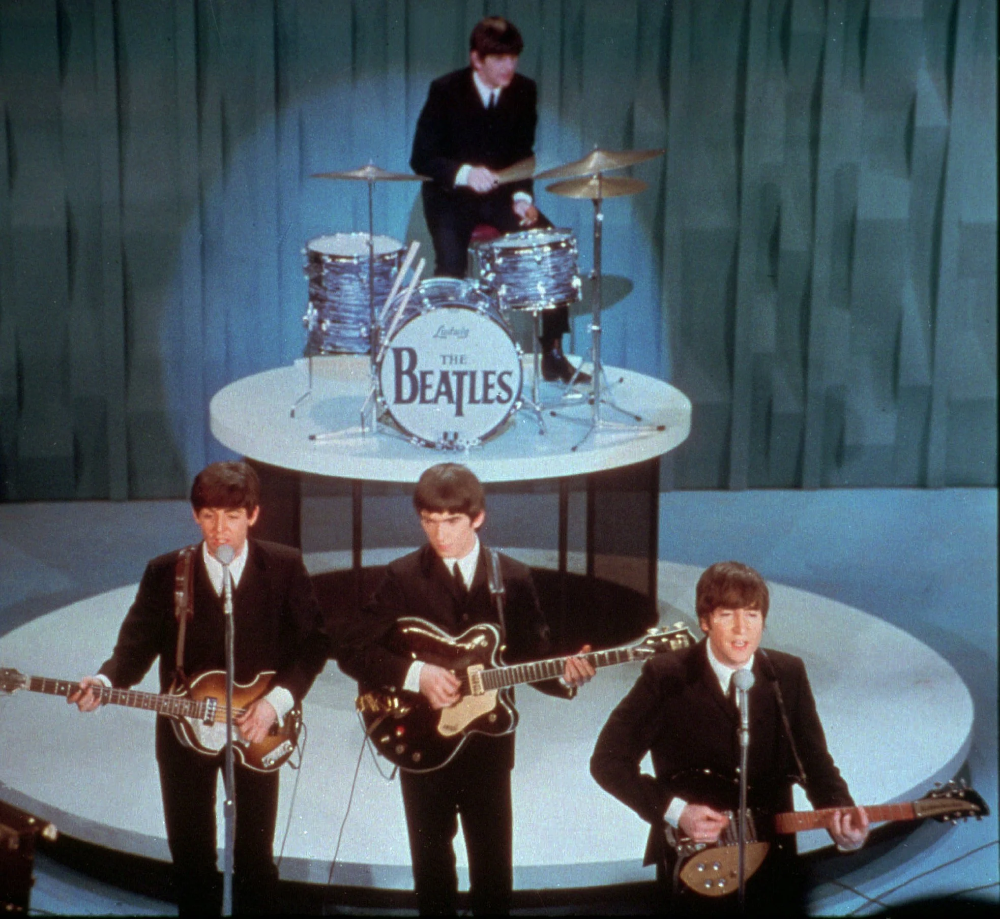

История создания
1956 – 1960
В 50-е годы Великобританию буквально захлестнуло повальное увлечение музыкой скиффл – жанр народного фольклора, в котором использовались одновременно элементы джаза, блюза и кантри. Причём наряду с обычными акустическими инструментами, музыканты зачастую использовали стиральные доски, пилы, бутылки заполненные водой, расчёски, пустые ящики и т.д. Особого таланта или каких-либо музыкальных навыков для того, чтобы играть скиффл не требовалось. Этот стиль музыки был своего рода предшественником рок-н-ролла и очень нравился молодёжи. Весной 1956 года в английском портовом городе Ливерпуль 15-ти летний подросток по имени Джон Леннон вместе со своими школьными друзьями Питером Шоттоном (Peter Shotton) и Эриком Гриффитсом (Eric Griffiths) организовал скиффл-группу The Quarrymen (дословно «Парни из каменоломни»). На самом деле, в самом названии группы скрывается игра слов от названия школы, в которой учились ребята – Quarry Bank Grammar School. 22 июня 1957 года группа дала свой первый большой концерт, действие которого происходило на улице Розбери-стрит (Rosebery Street). Ансамбль играл, расположившись прямо на открытом кузове грузовика. Спустя ровно две недели, 6 июля 1957 года, состоялось историческое выступление The Quarrymen в парке церкви Святого Петра в Вултоне (St. Peter's Woolton Parish Church). В этот день Джон Леннон познакомился с юным Полом Маккартни. Тот пришёл на концерт The Quarrymen с гитарой и после выступления представился участникам группы. Но прошло ещё немало времени, пока Джон со своими друзьями окончательно решил принять Маккартни в ансамбль. Официальный дебют Пола в группе состоялся на концерте после собрания Клуба консерваторов в Нью-Клабмор-холле (New Clubmoor Hall), расположенном в большом жилом районе Норрис Грин (Norris Green) 18 октября 1957 года. В этот день Джон Леннон и Пол Маккартни впервые выступили вместе на одной сцене. Школьный приятель Пола Маккартни, по имени Джордж Харрисон, был приглашён Полом на концерт группы 6 февраля 1958 года в Уилсон-холле (Wilson Hall). Однако, прошло ещё много дней в спорах и уговорах, пока Джон окончательно сдался, и Джордж тоже был принят в группу. На протяжении всего этого времени состав The Quarrymen постоянно менялся. 14 июля 1958 года The Quarrymen пришли в студию записи Kingston, работающую по принципу «приди и запиши себя сам». С помощью опытных инженеров они сделали свою первую профессиональную запись, которую потом нарезали на ацетатную пластинку. Диск содержал 2 композиции: кавер-версию известной песни Бадди Холли «Вот это будет денёк» (That'll Be The Day) и композицию, написанную Полом Маккартни совместно с Джорджем Харрисоном под названием «Не смотря на всю опасность» (In Spite Of All The Danger). В записи пластинки приняли участие Джон Леннон, Пол Маккартни, Джордж Харрисон, Джон Лоу и Колин Хантон. Владельцем единственного оригинального экземпляра этой пластинки на сегодняшний день является сэр Пол Маккартни. Данный диск считается самой дорогой пластинкой за всю историю грамзаписи. Уже в наше время на здании студии была установлена мемориальная доска, а обе композиции отреставрированы и включены в первую часть битловской «Антологии», которая в 1995 году вышла на компакт-дисках, виниловых пластинках и магнитофонных кассетах. В последующие два года со второй половины 1958-го вплоть до лета 1960 года ансамбль несколько раз менял своё название: «Johnny and the Moondogs», «Long John and the Silver Beatles», «The Beatals», «Silver Beetles» и т.д. Для участия в различных конкурсах ребятам постоянно приходилось придумывать для группы короткие и броские названия. Музыканты продолжали выступать в маленьких клубах, таких как «Касба» (Casbah), «Джакаранда» (Jacaranda) и даже имели небольшой тур по Шотландии в качестве аккомпанирующей группы, но так никем и не были замечены. Вскоре Джон Леннон привёл в группу своего друга по художественному колледжу Стюарта Сатклиффа (Stuart Sutcliffe), которого уговорил на деньги, вырученные от продажи одной из его картин, купить себе бас гитару. А за ударную установку сел сын хозяйки клуба «Касба» Пит Бест (Pete Best).
1960 – 1962
Весной 1960 года Джон Леннон предложил в названии группы слово «beetles», которое переводилось как «жуки», переделать под сочетание «beat» (бит), чтобы тем самым подчеркнуть ритмичный и пульсирующий стиль музыки ансамбля. Вскоре «Silver Beatles» и вовсе стали называться просто «The Beatles» по аналогии с группой Бадди Холли «Сверчки» (Buddy Holly and The Crickets). Летом 1960 года владелец клуба «Джакаранда» Аллан Уильямс (Allan Williams), поставлявший в Германию ливерпульские группы для работы в ночных клубах Гамбурга, предложил ребятам заключить первый в их жизни серьёзный контакт для работы за границей. 17 августа 1960 года Битлз (The Beatles) вышли на сцену клуба «Индра» (Indra) в следующем составе: Джон Леннон, Пол Маккартни, Джордж Харрисон, Стюарт Сатклифф, Пит Бест. В общей сложности, группа с августа 1960-го по декабрь 1962-го года приезжала на гастроли в Германию 5 раз. В первый свой приезд Битлз на протяжении 4-х с половиной месяцев выступали сначала в клубе «Индра», а затем перешли в более просторное помещение клуба «Кайзеркеллер» (Kaiserkeller). Эта первая поездка оказалась для группы несчастливой. Полиция, узнав о том, что Джордж Харрисон ещё не достиг совершеннолетнего возраста, депортировала его на родину. Вслед за ним после обвинения в поджоге помещения, где жили музыканты, из страны были высланы Пол Маккартни и Пит Бест. Последним покинул город в середине декабря 1960 года Джон Леннон. Его друг Стюарт Сатклифф остался в Гамбурге вместе со своей немецкой подругой Астрид Кирхгерр (Astrid Kirchherr). В промежутках между гастрольными поездками в Гамбург, Битлз продолжали выступать у себя на родине в небольших клубах. 21 марта 1961 года они впервые вышли на сцену клуба «Каверн» (The Cavern). В общей сложности группа выходила на сцену этого клуба 292 раза. Вторая поездка, которая длилась 3 месяца в период с апреля по июнь 1961 года, была более успешной. Группа стала играть в клубе «Топ Тэн» (Top Ten Club) на Рипербане (Reeperbahn). Там они познакомились с уже известным на то время в местных кругах музыкантом Тони Шериданом (Tony Sheridan), который стал их близким другом. Как раз в этот момент известный композитор и продюсер, разыскивающий для фирмы Polydor Records в клубах Гамбурга подающих надежды музыкантов, Берт Кемпферт (Bert Kaempfert) пригласил Тони на прослушивание. В качестве аккомпанирующих Шеридану музыкантов в студию записи были приглашены и Битлз. Всего было записано 10 композиций, две из которых на сегодняшний день считаются утерянными. Наиболее удачные композиции этой сессии в разное время вышли отдельными синглами. Однако, при подготовке первой пластинки звукозаписывающая компания спрятала аккомпанирующую группу по цензурным соображениям (название Beatles оказалось созвучным с немецким ругательством peedles) под названием уже существующего проекта Тони, а именно – Tony Sheridan and The Beat Brothers. Но на самом же деле данный состав музыкантов (за исключением Стюарта Сатклиффа) представлял собой Битлз. 9 ноября 1961 года на одно из выступлений Битлз в клубе «Каверн» заглянул владелец музыкального магазина NEMS Брайан Эпстайн (Brian Epstein). Заглянул он туда не случайно. Накануне один из покупателей поинтересовался у него синглом My Bonnie, который был издан в Германии (тот самый, который Тони Шеридан записал вместе с Битлз). Брайан был обескуражен тем, что в его магазине не хватает этой пластинки. Наведя справки, он был ещё больше удивлён, узнав, что группа записавшая пластинку, из его родного Ливерпуля. Мало того, она ещё и выступает всего в нескольких шагах от его магазина. Постепенно Брайан заразился энергией выступлений Битлз и решил стать их менеджером. 1 января 1962 года Битлз отправились на прослушивание в студию компании DECCA. В этот день были записаны 15 композиций, три из которых были сочинены творческим дуэтом Леннон-Маккартни. Однако, руководство компании нашло группу недостаточно профессиональной и отказало Битлз в подписании контракта о дальнейшем сотрудничестве. Но Брайан Эпстайн на этом не сдался и продолжил оббивать пороги различных компаний. А тем временем в апреле 1962 года Битлз отправились в свою 3-ю гастрольную поездку в Гамбург. Новый контракт был ещё более выгодным, чем все предыдущие. Он предполагал их выступления в только что открывшемся новом помещении «Стар-Клуба» (Star-Club), а плата за неделю выступлений в этом клубе составляла 500 немецких марок на каждого музыканта. Однако, в самые первые минуты по прибытию в Гамбург ребят ожидала жуткая новость – скончался их друг Стюарт Сатклифф. Перед этим Стюарт долгое время мучился головными болями после травм, полученных ранее, когда на группу напали хулиганы. С первых же дней своего пребывания в Гамбурге Битлз познакомились с участниками другой ливерпульской группы Рори Сторм и «Ураганы» (Rory Storm and the Hurricanes). Между музыкантами завязалась дружба. Но больше всего времени в компании с Битлз проводил их ударник Ричард Старки (в дальнейшем взявший себе псевдоним Ринго Старр). В августе 1962 года Ринго полностью заменил Пита Беста и стал одним из Битлз. Таким образом, осенью 1962 года уже полностью сформировался классический состав квартета Битлз. В это время Брайан Эпстайн продемонстрировал записи группы Джорджу Мартину (George Martin) - звукоинженеру компании Parlophone. Записи хоть и не произвели на Мартина большого впечатления, но он был поражён энтузиазму Брайана. Битлз были приглашены в студию для записи своего первого сингла. Пластинка с композициями Love Me Do и P.S. I Love You появилась на прилавках музыкальных магазинов 5 октября 1962 года. Вскоре сингл поднялся на 17-ое место в чарте музыкального журнала Record Retailer и на группу обратили внимание.
Фото группы
   